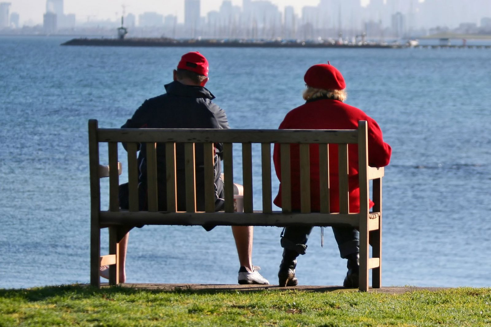

Mental disorders are highly prevalent in our society. One in every five Australians experience a mental disorder each year and one in every two will do so during their lifetime.
Depression and anxiety are among the most common disorders. They are inherently unpleasant — if they weren’t, mental health disorders wouldn’t be Australia’s third highest burden of disease, costing an estimated $60 billion annually in health care, lost productivity and other costs.
When depression and anxiety manifest as negative thoughts and feelings that affect behaviour, the natural inclination is to attempt to find relief from that distress. Normal human behaviour is to seek the path of least resistance, which is one reason why unhealthy coping mechanisms like alcohol abuse are so widespread.
It may also be tempting to try and find a quick solution in “natural cures” for depression and anxiety, often marketed and promoted in the form of herbal supplements.
Although the idea that a pill or infusion can make one’s problems disappear may seem appealing, mental health just isn’t that easy. In fact, the overwhelming body of accepted evidence in the serious medical field of treating mental health disorders is clear:
mental health conditions like depression and anxiety are ideally addressed through a combination of lifestyle improvements along with talk-based and other forms of counselling and therapy (like phone counselling).
Here are five real and effective “natural” ways for dealing with mental health conditions like depression and anxiety (that aren’t herbal supplements).
Staying active and getting physical exercise
The mind and the rest of the body are not separate entities. Exercise and getting active is therefore one of the best things that anyone can do for their wellbeing.
The mental health benefits of exercise are well-documented, even if the precise manner in which exercise improves mood isn’t yet fully understood.
A few hours a week of physical activity can make a difference. Staying active, by the way, doesn’t mean hitting the gym four times a week or training for a half-marathon.
Even a 20-mintue walk can help clear your mind and provide a new perspective on an otherwise stressful situation.
Staying physically active or going outside for a walk is one of the most natural and beneficial things anyone can do for a mental health condition. It’s free and, best of all, you can set your own pace.
Stay connected and get out more
Social connection is an almost universal need, yet 5.6 million Australians today are thought to experience loneliness.
Loneliness may well be the next public health crisis, in the same way that the obesity epidemic received public attention in recent decades.
Human connection is vital to our wellbeing. It overwhelmingly influences our outlook and there is strong evidence to suggest that it can affect physical health and even life expectancy.
Social connection is definitely a natural way to address conditions like depression and anxiety. Best of all, it could mean different things to different people: getting out more with a spouse or the kids, reaching out to friends and family,
reconnecting with people, making a new friend, keeping up good relationships with neighbours, or even chatting to people while walking the dog at the local park.
Try to get better sleep
Sleep is a universal need for almost all animals. It has an enormous effect on mental health and wellbeing and is a strong predictor for various measures of physical health.
The numerous mental health benefits of adequate sleep have consistently been demonstrated. Among them are a reduced likelihood of depression and anxiety; improved memory, attention and learning; a reduced likelihood of bipolar disorder and even a reduction in inflammation linked to chronic disease.
As with exercise and social connection, better sleep is about as natural a cure as you can get when it comes to mental health.
There are many ways to get better sleep. They include avoiding stimulants like alcohol, tobacco and caffeine in the evening; staying active or engaging in physical exercise during the day (but not before bed); avoiding the use of phones and portable devices in bed; and setting a regular bedtime routine.
More serious conditions like insomnia or sleep apnea may require a visit to a GP.
Avoid unhealthy coping mechanisms
Everyone has their own way of dealing with life’s stresses, known as coping mechanisms or coping behaviours. Sometimes, these behaviours are healthy and beneficial in that they help reduce stress long-term. Examples include exercise, fishing, going for a walk, getting your hair done, pottering in the shed or catching up with mates over a coffee.
When the coping mechanism for stress is likely to exacerbate the situation in the long-term, it is referred to as an unhealthy or maladaptive coping strategy. Common examples include drug or alcohol abuse, smoking, gambling, unnecessary retail spending and overindulging in junk food.
These behaviours provide what feels like short-term relief and reward, but are ultimately very unlikely to remove the cause of stress and worry.
Avoiding behaviours that can amplify problems and underlying causes of distress is a legitimately natural way for addressing conditions like depression and anxiety. Certainly, changing a bad or destructive habit is a complex process. Even so, one great way to start is to consider why you or someone you know smokes, drinks alcohol, takes drugs or binge eats.
Talk it out
Talking about worries and stresses is one of the best things that anyone can do. The simple act of talking about a source of concern can help improve one’s outlook.
This is the reason why On the Line employs professional counsellors (there are no volunteers). All our staff have a minimum of 456 post-qualification face-to-face hours of counselling experience prior to joining our organisation.
They also hold a tertiary degree of minimum three-year duration in a relevant discipline of psychology, social work, counselling and social science or welfare studies
Counsellors are trained to listen to callers and web chat users. In doing so they help them develop strategies to cope — and ultimately help them feel better.